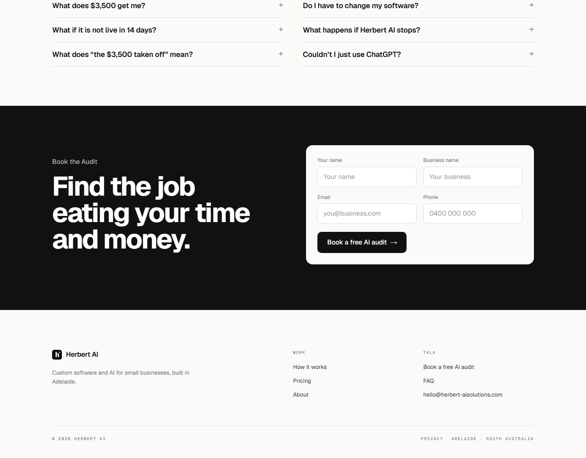
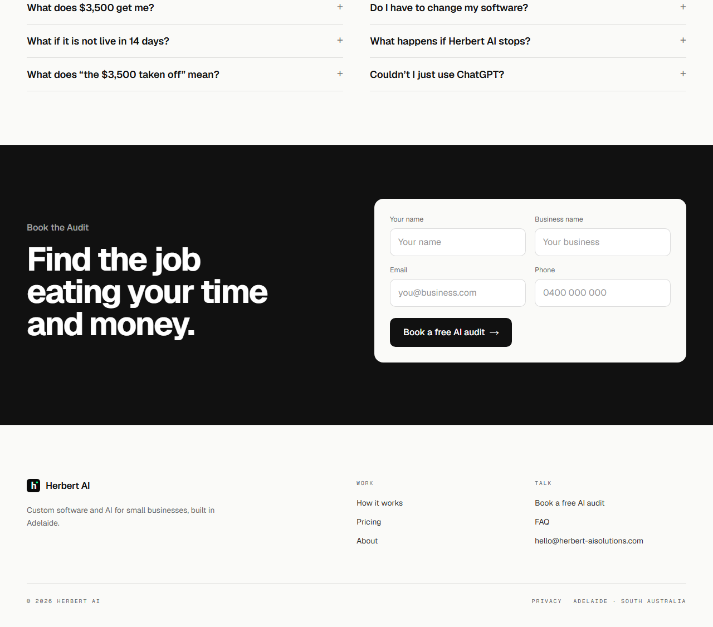
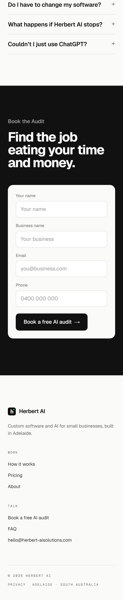
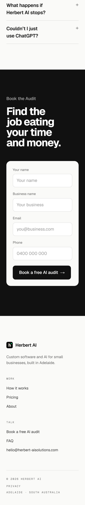

The real page's end at 1440, 1280, 375 and 320: the bottom of the questions, the dark close band with the form, its heading the first section's own line, centred against the form, then the footer. forms on the page 2, ids used twice none, every label points into its own form True · hidden fields that differ between the two forms: ['subject']; subjects ['New AI audit request · /pilot', 'New AI audit request · /pilot (end)'] · required fields: first form ['name', 'business', 'email', 'phone', 'message'], end form ['name', 'business', 'email', 'phone'] · clicking the end form's Email label focuses #end-email · clicking the first form's Email label focuses #email · home page form ids unchanged: ['', 'name', 'business', 'email', 'phone'].



